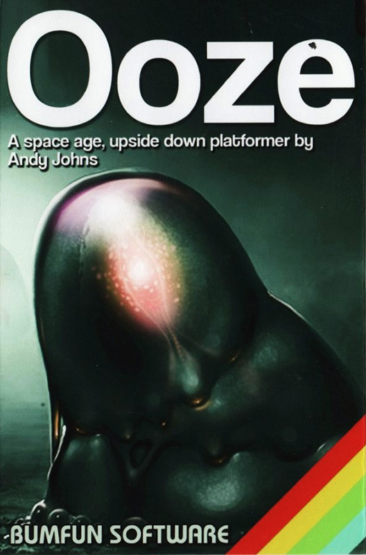
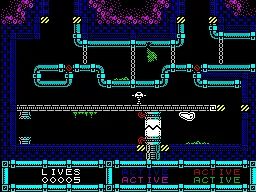

OOZE


{kind=link}

| Created by: | Andy Johns, David Saphier, Mikhail Ershov, Vitaliy Rayden |
| Price: | Free |
| Year: | 2017 |
| Source: | vintageisthenewold.com |
This is yet another fine example of a game crafted using Jonathan Cauldwell’s Arcade Gamer Designer (AGD) and comes available in both 48K and 128K versions. As usual, I’ve opted to play the 128K version for the purposes of this review, thanks to the inclusion of in-game music that remains absent in the 48K edition.

As you might have discerned from the title, the game’s central character is a glob of semi-sentient protoplasm, which appears to have gotten itself into something of a sticky situation. This might not be the most endearing or relatable protagonist to feature in a video game, but don’t let this put you off: Ooze is certainly a title worthy of your attention, boasting some innovative game mechanics that help add a little spice to the tried and tested arcade formula.
Set deep below the surface of an unknown planet, you must guide the ooze through the confines of various industrial facilities, maintenance corridors and rocky caverns that make up the planet’s inner core. The only means of escape is a lift shaft that connects the facility’s core to the surface world, but the way forwards is blocked by a series of shield gates through which the ooze cannot proceed. These can only be deactivated by collecting a series of colour-coded access cards scattered throughout the game’s myriad of screens, then taking each of them to the a central control hub and shutting down the respective field. Additional areas become accessible once a gate becomes inactive, enabling you to continue your search for the way out.
As you might expect, the industrial nature of the complex makes the environment particularly hazardous, with plenty of obstacles and traps designed to block your progress: lightning bolts crackle and arc from various power conduits and generators, threatening to evaporate your ooze on contact, whilst getting caught between the jaws of one of the many guillotine-like access doors proves to be equally fatal. If that wasn’t enough, there’s a veritable army of sentry droids and robotic minions that patrol the corridors, looking to terminate any gooey interlopers that have the misfortune to cross their paths.
One of the things that has impressed me most since I started playing these AGD creations is just how engaging each title has been. The tool-set is designed as a framework for the the creation of flick-screen arcade titles, so it’s great to see developers like Andy and David managing to instil such originality into their creations. Ooze distinguishes itself from it’s contemporaries by introducing a mechanic where, at the touch of the fire-button, your gelatinous blob will defy gravity, propelling itself upwards and attaching itself to platforms, pipes and any other surface directly above it’s current position. Once attached, it’s perfectly possible to slide your way along the ceiling, enabling the player to avoid traps and hazards at ground level, with a second press of the fire-button detaching the ooze from the ceiling, falling back to ground level.
Not only does the ooze possess some truly remarkable adhesive properties, it’s also possible to alter it’s direction of travel whilst air-born, with a push on the joystick applying after-touch that enables your blob to drift horizontally whilst moving. Rather than simply jumping between platforms, this mechanic requires players to think about the layout of the screen and to take verticality into consideration when it comes to overcoming the perils present within each of the game’s screens. The end result is a simple, yet remarkably effective game mechanic that makes an interesting alternative to the usual running and jumping present in similar titles.
The gated approach to progression means that the initial part of the game is spent traversing many long corridors, eventually opening up in the latter stages where you’ll need to navigate your way through a number of caverns to reach the next key card. I felt that the game’s best moments emerge during these more open screens, where players are required to flip-flop their way between a series of floating platforms whilst taking care to time the inversions so as to avoid the droids patrolling across the play-field.
If I’m honest, I was left a feeling a little disappointed that there weren’t more screens of this nature: I appreciate that this is an arcade game rather than a puzzler, but I felt that the game was at it’s most satisfying – and rewarding – when I needed to pause for a brief moment and think about how best to beat a screen, rather than simply blundering in and hoping for the best. That’s not to say that I found the rest of the game formulaic, just that the gravity mechanic works so well and the difficulty finely tuned that I wished that there had simply been more!
In terms of presentation, this is yet another impressive showing from Andy, boasting some excellent artwork. Maintenance corridors and basements feature platforms constructed of grungy, ruptured pipework, often spewing forth clouds of noxious, steaming vapour, whilst generators and power stations are illustrated in suitably future-tech style with the accompanying crackle of static discharges. In fact, it wasn’t until that I went back and played the game a second time that I noticed some of the finer attention to detail in the level art, such as such as the black and yellow hazard markings that adorn various industrial contraptions and areas of interest.
The game features a clean and intuitive interface that includes a status panel located underneath the main play window. The left hand panel contains a counter showing how many lives remain, while the right shows the status of the four shield gates: “Active” indicates that the barrier is still enabled and impassable, whilst “Inactive” shows which barriers are down and can be bypassed.
I was pleased to note that the game includes some great animation (such that the limitations of the platform will allow for), whether it be the oddly hypnotic pulsating of the ooze itself, to the various droid security bots that bounce and whirr as they travel along the various corridors.
Sound effects are the usual assortment of beeps and static, but the 128K version I chose to play included some great music composed by Miguel of CyberPunks Unity, as well as some equally engaging in-game music from Rayden (Vitaliy).
What all this amounts to is yet another high-quality AGD offering, of which both Andy Johns and David Saphier can be justifiably proud. With engaging mechanics, great artwork and a difficulty level that provides the right level of challenge, Ooze is a fantastic game that ZX Spectrum fans should definitely take the time to play – highly recommended!
Reviewed by Alec from vintageisthenewold.com